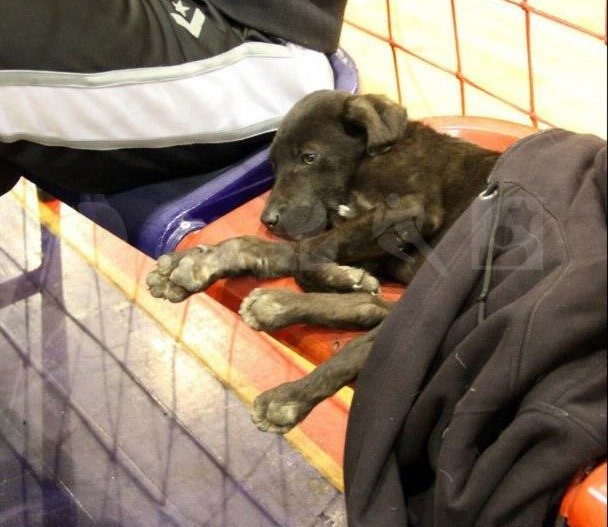
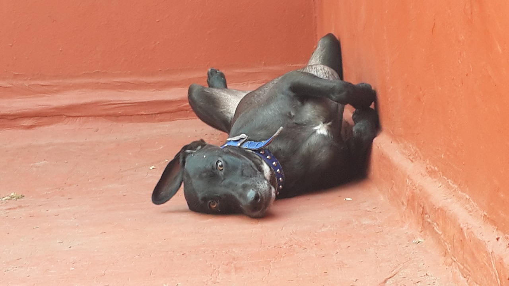
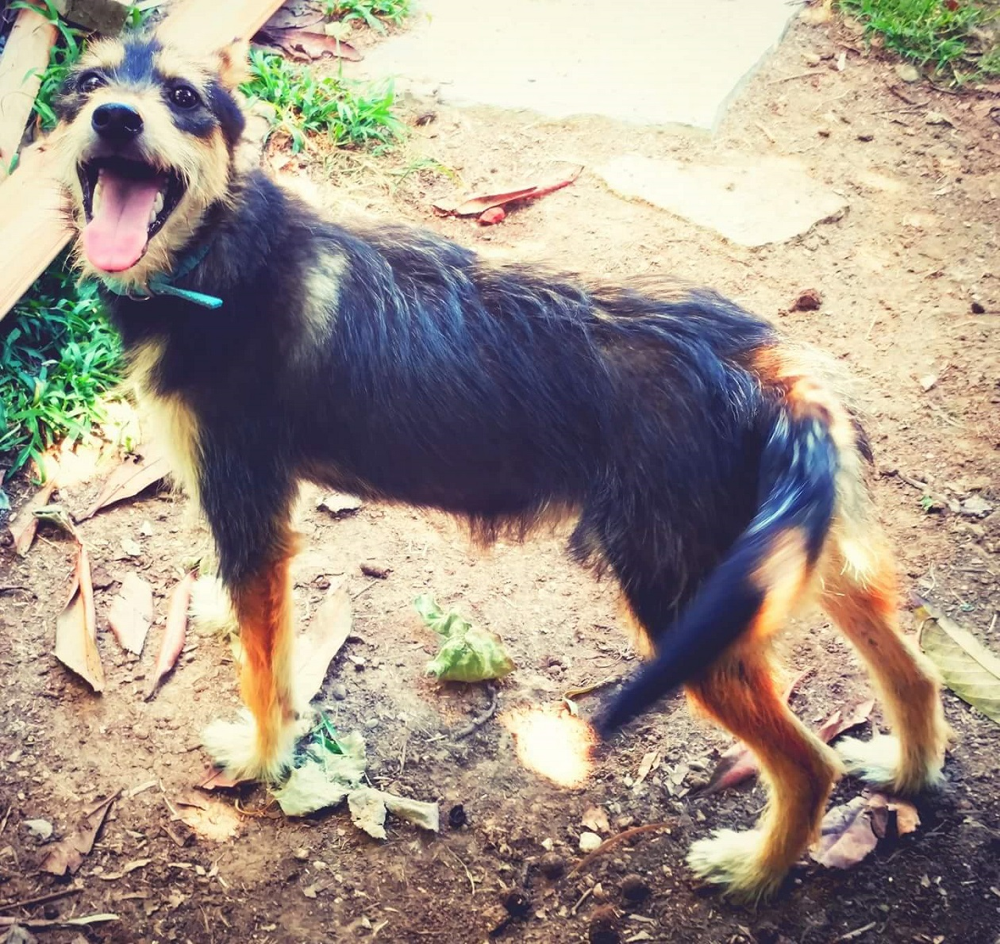
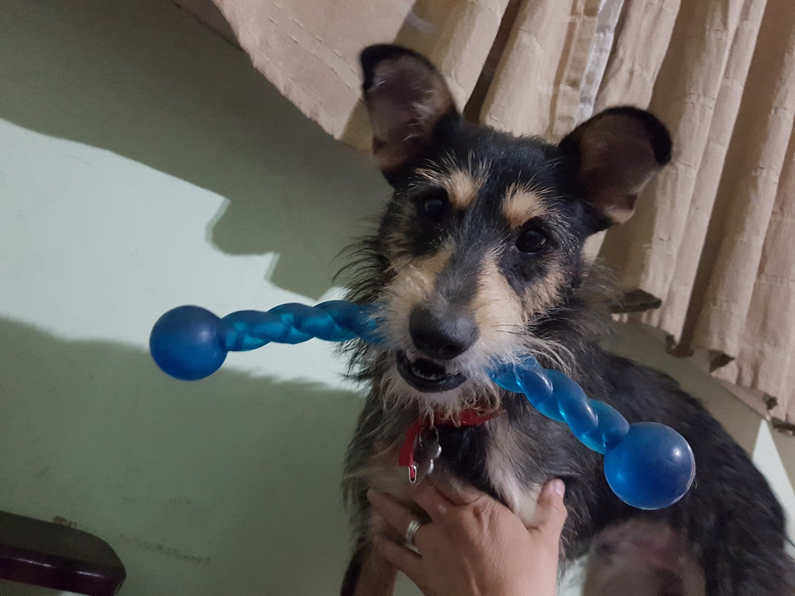
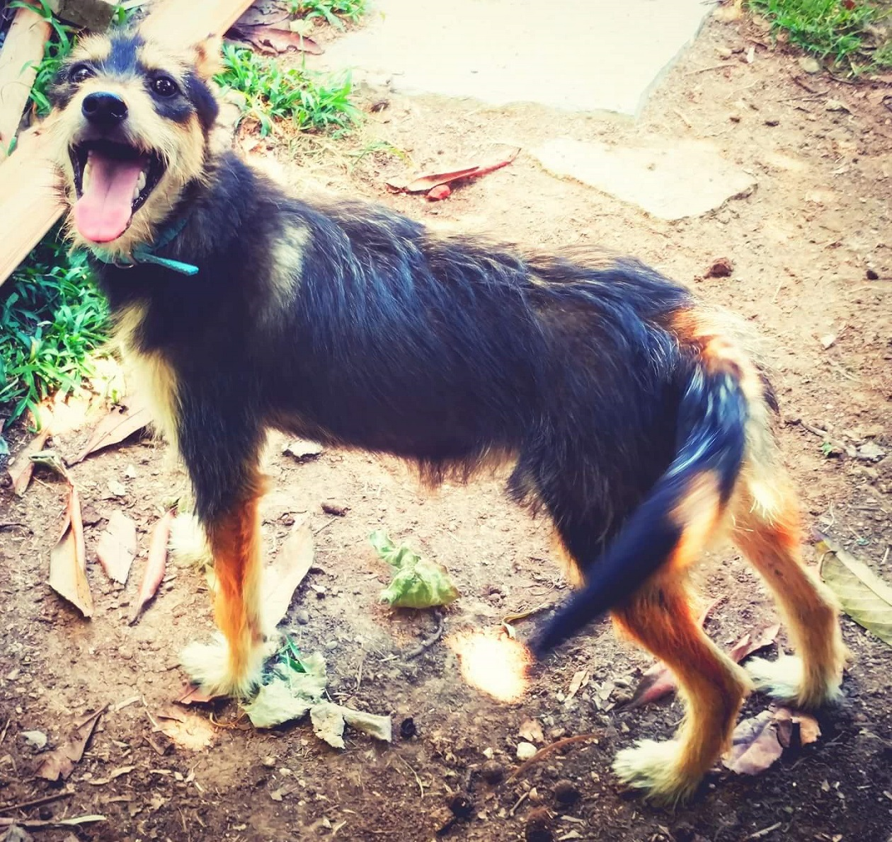
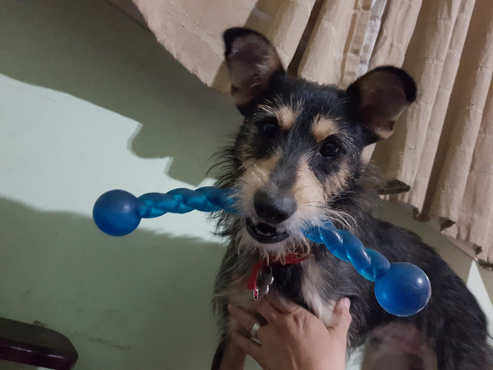

Ayudemos a ayudar

1Que es el Fondo
Es una suma de dinero conformada por pequeñas donaciones de muchas personas, que mes a mes se destinan a distintos grupos, instituciones, fundaciones, refugios o particulares para ayudar en la obra titánica que hacen. En criollo es una vaquita que armamos con ustedes para ayudar a los animales.
2Como hago para ser parte
Anotate en este formulario.AL ANOTARTE SÓLO ACEPTÁS EL COMPROMISO, pero NO hacés la donación en ese momento.
3Mes a mes
Cada mes vas a recibir por mail una reseña y los datos del beneficiario. ¡¡ESE ES EL MOMENTO DE HACER EFECTIVA TU DONACIÓN!!.
4Donación
Cumplís con tu compromiso y envías el comprobante al beneficiario y a nosotras.
Con el Fondo cambiamos sus vidas
Adopción de Yako


Adopción de Rocket
 


